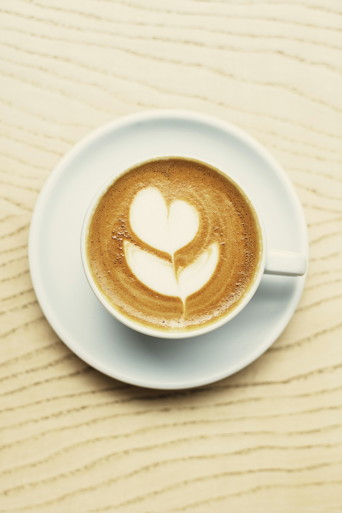
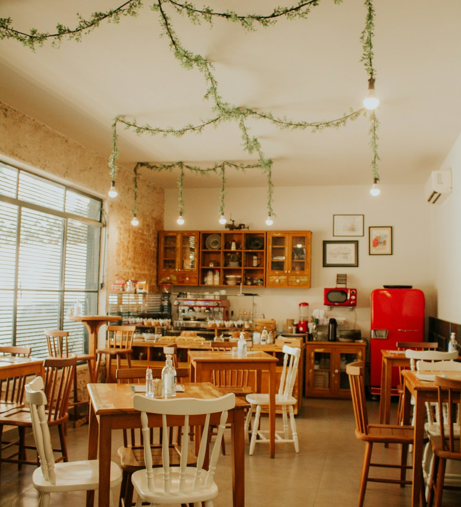

КОФЕЙНЯ ПО СОСЕДСТВУ
Маленькие
радости.
Каждый день.
Любимый кофе, ещё тёплый круассан
и место, где можно никуда не спешить.

ПОДСКАЗКА БАРИСТА
Какой кофе
вам по вкусу?
Выберите, что любите.
Мы подскажем, с какой чашки начать.

О КОФЕЙНЕ
Место маленькое.
Тепла — много.
«Крошка» — это столик у окна, аромат свежемолотого кофе и бариста, который запомнит, как вы любите.
Мы выбираем зерно у небольших обжарщиков, печём по утрам и верим: хороший день часто начинается с простых вещей.
Забегайте за кофе.
Оставайтесь за настроением.
В ГОСТИ
Увидимся
за чашкой?
Одному, с друзьями или с любимой книгой.
У нас для вас найдётся место.